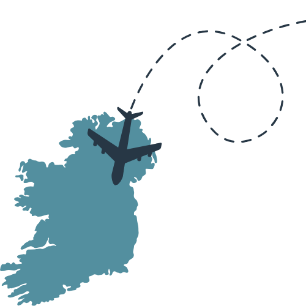
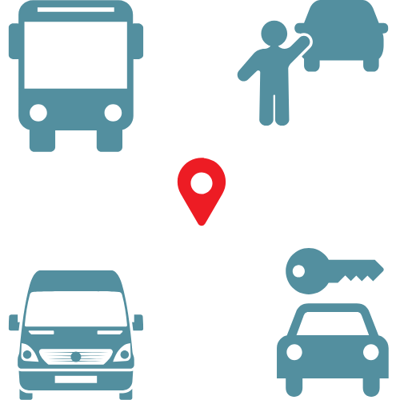
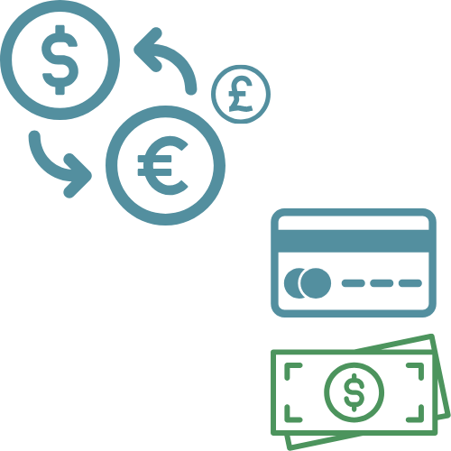
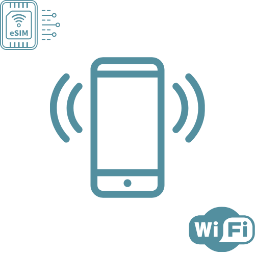
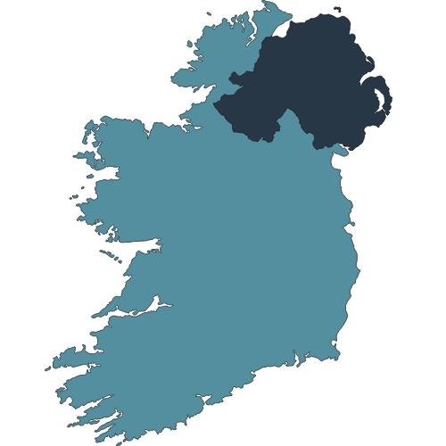
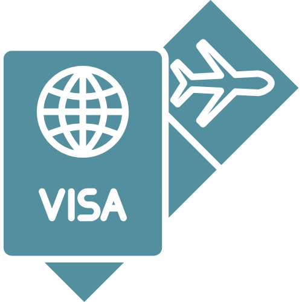
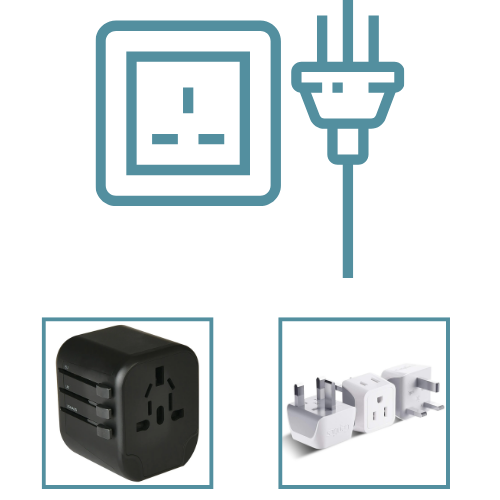
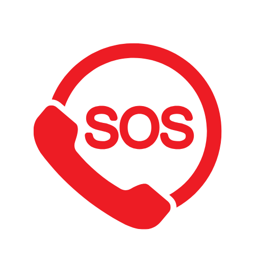

|
Planning your trip to Ireland for our wedding? We’ve gathered some tips and resources to make your journey as smooth as possible! Note to seasoned travellers: You do you! We doubt there's anything here that you don't already know :) |
| How do I get to Ireland?

|
For most of our guests, flying into Dublin Airport (DUB) is the easiest and most convenient option. Dublin is Ireland’s largest international airport, located about 45 minutes from Slane and The Millhouse.
Flights from Canada
- Guests traveling from Calgary, Victoria, or Toronto can look for direct or one-stop flights to Dublin. Airlines like Air Canada, WestJet, and Aer Lingus often offer competitive rates.
- Alternatively, an economical option is to fly to a nearby European or UK city (e.g., London or Paris), which often has better flight deals from Canada with the same and other carriers as well. Once there, you can book a short connecting flight to Dublin with a lower-cost carrier.
- Some of our favourite resources to search for flight options are Google Flights and Skyscanner. We'll also be keeping an eye out for flight deals and if we come across any we'll share it with you all. If you come across any good deals, please share it with us too!
Flights from Europe or the UK
-
For those traveling from London or Edinburgh, we're sure you are seasoned travellers already so no need to give you extra tips. Just know you have it good and will make those traveling from Canada very jealous.
Cost-Saving Tips
-
Low-Cost Carriers: Airlines like Ryanair and EasyJet offer budget-friendly fares, but be mindful of their baggage policies. Basic fares often don’t include checked luggage, and fees for additional bags can add up quickly.
-
Full-Service Airlines: If you’re traveling light, British Airways offers reasonably priced flights between the UK and Ireland, with carry-on baggage included. This can be a better option to avoid surprise fees.
|
| Getting from Dublin to Slane

|
Once you’ve landed at Dublin Airport, there are several ways to reach Slane and The Millhouse:
Driving or Car Rental
- Renting a car is a convenient way to travel and explore the Irish countryside. Car rental services are available at Dublin Airport, including Hertz, Enterprise, and Avis.
- Driving time from Dublin Airport to Slane is about 45 minutes to an hour.
- Remember: For those traveling from Canada, in Ireland, driving is on the left-hand side and driver & passenger side is also reversed (bigger difference for stick shift). Other things to mind are toll and traffic rules. For more information checkout Driving in Ireland
Private Hire or Taxi
-
For a direct option, consider booking a taxi or private car hire.
- Popular ride-hailing apps like Uber and Lyft are not widely available in Ireland; however, Dublin Airport does support Uber Black, which operates more like a private hire service.
-
Local apps like Lynk or Free Now are reliable and easy to use for booking a ride from Dublin Airport to Slane.
-
Expect to pay approximately €80–€100 for the journey.
-
If you’re traveling with a group or coordinating with others, private car services or pre-booked shuttles may be a more cost-effective option.
Public Transportation
-
Budget-conscious travelers can take a bus from Dublin to Slane via Bus Éireann. Check schedules and ticket prices online.
-
Travel time by bus is approximately 1.5 hours.
Group Transport (TBD)
After RSVP close, and travel plans from attendees become more firm, we may look into organizing group transportation. Details will be shared closer to the day of the event. If this is something you are interested in, please keep Logan or Lucy updated on your travel plans and dates.
|
| Currency & Payment Tips

|
Currency: Ireland uses the Euro (€). Most shops, restaurants, and services accept major credit and debit cards. Mind FX fees for card use.
Cash: While cards are widely accepted, it’s a good idea to have a small amount of cash for rural areas, local markets, or small establishments. ATMs are readily available in Dublin and Slane.
Tipping: Tipping in Ireland is optional but appreciated. In restaurants, leaving 10-15% of the bill is standard if service isn’t included. For taxis, rounding up to the nearest euro is common.
Currency Exchange: Currency Exchange: You can exchange money at banks, Dublin Airport, or currency exchange kiosks, but ATMs often provide the best exchange rates. There are other services such as Wise that can add convenience while travelling.
|
| Mobile Phones and Connectivity

|
eSIMs for Easy Connectivity
- For a hassle-free and affordable way to stay connected, consider using an eSIM. eSIMs eliminate the need for a physical SIM card and can be set up on your phone before you travel.
- Providers like Airalo and Holafly offer affordable eSIM packages for Ireland and even multi-country plans if you’re traveling to other European destinations.
- Benefits of eSIMs include easy activation through an app—no need to visit a store or swap out physical SIMs; Plans often include generous data allowances, perfect for navigation, social media, and staying in touch; and multi-country packages are ideal for exploring other countries before or after the wedding.
Wi-Fi Access
- Wi-Fi is widely available in hotels, cafes, and public spaces in Ireland, so you can stay connected without using data.
Download essential apps (like Google Maps) offline to minimize data usage.
- Wi-Fi will also be available at the wedding so you can stay connected while partying!
|
| Ireland vs Northern Ireland

|
Ireland (Republic of Ireland): Where Slane and The Millhouse are located. It uses the Euro (€) as its currency and follows Irish laws.
Northern Ireland: Part of the United Kingdom, located just north of the border with Ireland. It uses the British Pound (£) and follows UK laws.
Driving Across the Border
- No Border Checks: While there are no formal border checkpoints between Ireland and Northern Ireland, you’ll notice road signs and speed limits change.
- Speed Limits: In Ireland, speed limits are in kilometers per hour (km/h), while in Northern Ireland, they’re in miles per hour (mph). Pay attention to these changes when crossing the border.
- Car Insurance: If you’re renting a car, confirm with your rental company that your policy covers driving in both Ireland and Northern Ireland. Most companies include this, but it’s worth double-checking.
- Tolls: Be aware of toll roads in Ireland, especially the M1 motorway, which connects Dublin to Northern Ireland. Some tolls accept both Euros and Pounds, but having Euros on hand is safer.
|
| Visa & Travel Documents (for Canadians)

|
Ireland (Republic of Ireland): No visa requirement for 2025.
Northern Ireland and rest of UK:
- Canadian citizens now need an Electronic Travel Authorization (ETA) to enter or transit through the United Kingdom (UK). This new requirement, launched on January 8, 2025, is part of the UK's updated entry regulations. It includes Canada, the US, Australia, and other non-European countries.
- Click here for more information on ETA and how to apply.
Rest of Europe
- Starting mid-2025, Canadian travelers will require an approved visa waiver through the European Travel Information and Authorisation System (ETIAS) for travel through to the Schengen Area (does not include Ireland).
- ETIAS travel authorisation is an entry requirement for visa-exempt nationals travelling to any of these 30 European countries. It is linked to a traveller's passport. It is valid for up to three years or until the passport expires, whichever comes first.
- If you are planning to do some additional travels in the EU, it would be worth keeping updated on when EITAS requirement begins and apply. Check out ETIAS for Canadian Citizens for more information.
|
| Electrical Outlets

|
Plugs and Voltage: Ireland uses Type G plugs (three rectangular pins) and operates on 230V/50Hz. If your devices use a different plug type or voltage, you’ll need an adapter or converter.
Travel Tip: Universal adapters with USB ports are a handy option for charging multiple devices.
|
| Emergency Numbers

|
In case of emergency: The emergency services number in Ireland is 112 or 999 for police, fire, or medical assistance.
|
| Any other tips for traveling in Ireland?
|
Toll Roads: If you’re driving, note that the M1 motorway to Slane has toll points. Most accept cash and cards.
Navigation: Download apps like Google Maps or Waze for directions.
Pack Smart: If using low-cost carriers, travel light to avoid baggage fees.
|